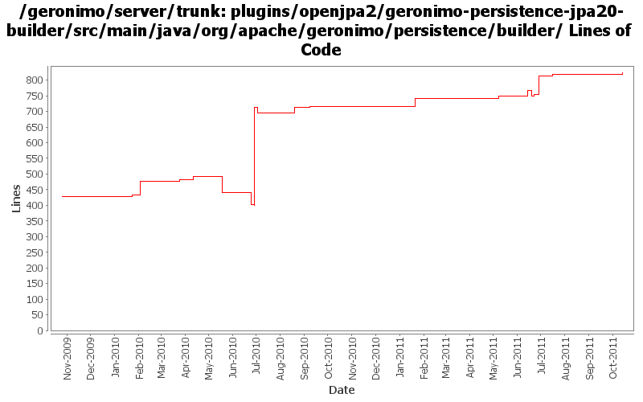

[root]/plugins/openjpa2/geronimo-persistence-jpa20-builder/src/main/java/org/apache/geronimo/persistence/builder

| Author | Changes | Lines of Code | Lines per Change |
|---|---|---|---|
| Totals | 56 (100.0%) | 944 (100.0%) | 16.8 |
| djencks | 32 (57.1%) | 677 (71.7%) | 21.1 |
| hanhongfang | 4 (7.1%) | 97 (10.3%) | 24.2 |
| xuhaihong | 7 (12.5%) | 86 (9.1%) | 12.2 |
| genspring | 5 (8.9%) | 41 (4.3%) | 8.2 |
| rwonly | 1 (1.8%) | 21 (2.2%) | 21.0 |
| gawor | 4 (7.1%) | 14 (1.5%) | 3.5 |
| rickmcguire | 2 (3.6%) | 5 (0.5%) | 2.5 |
| vamsic007 | 1 (1.8%) | 3 (0.3%) | 3.0 |
GERONIMO-6191 can not query the persistence unit gbean when ejb is in a war
21 lines of code changed in 1 file:
Update codes due to getInjectionTargets return value type changed to Set
2 lines of code changed in 1 file:
GERONIMO-5050 to increase ValidatorFactoryGBean and PU Gbean priority so that the openjpa transformer could be started before entity classes are loaded by AppinfoGbean.
4 lines of code changed in 1 file:
a. Make the persistence unit/context query be compatible for both client and server side
b. ConfigurationAwareReference could work without no artifact id
11 lines of code changed in 1 file:
make META-INF/persistence.xml in web module processed, and also update the persistence ref search process to select correct one when several persistence units exist in the same ear module
70 lines of code changed in 2 files:
GERONIMO-6022 Support use the @Resource(name="java:global/env/abc") for environment entry injection
5 lines of code changed in 1 file:
make META-INF/persistence.xml in standalone ejb be processed
7 lines of code changed in 1 file:
Revert r1135393 "update PersistenceUnitBuilder to correctly process standalone ejb module and war module in ear file" for now.
because it breaks most of the persistence tck cases.
1 lines of code changed in 1 file:
update PersistenceUnitBuilder to correctly process standalone ejb module and war module in ear file
20 lines of code changed in 1 file:
Match the directory classpath whether it ends with "/" or not.
9 lines of code changed in 1 file:
small change after OPENEJB-1446
1 lines of code changed in 1 file:
enable cmp entity bean in geronimo.
26 lines of code changed in 1 file:
ResourceFinderCallback API updates
4 lines of code changed in 1 file:
restore default environment to the BValNamingBuilder, remove extraneous setAttribute() for PersistenceUnitGBean
0 lines of code changed in 1 file:
GERONIMO-5226 Pass container ValidationFactory to the persistance manager when creating an entity manager.
o Hook the BValModuleBuilderExtension to openejb deployer.
o Add ValidatorFactoryGBean as a parameter to PersistenceUnitGBean constructor.
3 lines of code changed in 1 file:
Persistence units are getting more variable names now. Make the search when building refs more likely to find them
69 lines of code changed in 1 file:
jndi normalization fixes
2 lines of code changed in 1 file:
GERONIMO-5066 Fix a lot of problems with jndi including wrong finders and inconsistent adding of injections
14 lines of code changed in 1 file:
don't try to validate xml, it doesn't work
1 lines of code changed in 1 file:
GERONIMO-5423 make lib/ persistence units in an ear global
6 lines of code changed in 2 files:
Only look in module and parents for persistence units. Only look in module for persistence units for refs. Combine persistence unit and context ref builders.
382 lines of code changed in 4 files:
GERONIMO-5408 undo mistaken commit
2 lines of code changed in 1 file:
GERONIMO-5408. Attach classpaths to modules, and combine them into the DeploymentContext bundle-classpath
6 lines of code changed in 2 files:
cf openejb rev 958340. marshal persistence.xml in the correct namespace, marshal methods names changed
2 lines of code changed in 1 file:
GERONIMO-5190 use openejb-jee jaxb tree for spec dds
83 lines of code changed in 3 files:
GERONIMO-5025, GERONIMO-5117. Make jndi supported directly by Modules and straighten out which contexts are shared when.
4 lines of code changed in 2 files:
GERONIMO-4680 Use bundle resource finder to find persistence.xmls. A bit of cleanup
77 lines of code changed in 3 files:
XBEAN-148 use new xbean-bundleutils
1 lines of code changed in 1 file:
GERONINMO-4680 slightly osgi-ify PersistenceUnitInfo, at least eliminating an NPE
17 lines of code changed in 1 file:
I think we want to use the module classpath, not the ear classpath. Also use a slightly different setup for the PU list key
11 lines of code changed in 1 file:
More update for using generic key in EARContext
12 lines of code changed in 1 file:
GERONIMO-5205: don't look for persistence units in bundle-based deployments. The Aries JPA should take care of PUs in bundles
5 lines of code changed in 1 file:
GERONIMO-5190, GERONIMO-4360. Make jaxb dd objects fit into deployment system a little bit, and add some incomplete connector annotation support
1 lines of code changed in 1 file:
GERONIMO-5057 Use those xmlbeans generated by JAVA EE 6 schema files
56 lines of code changed in 3 files:
GERONIMO-5030: Initial refactoring of some of the module deployment code to support deployment of Bundles. Also, implemented rfc66 extender that can actually deploy WABs with simple servlets and jsps.
3 lines of code changed in 1 file:
GERONIMO-5025 Initial work on ee 6 scoped jndi stuff. Minimal testing so far
0 lines of code changed in 4 files:
fix problem in EarConfigBuilder when constructing sub-configurations for wars. Rename DeploymentContext.getBundle to getDependencyBundle to try to make it clearer that it is temporary and not always available. Start updating pluto/console stuff for pluto 2.
1 lines of code changed in 1 file:
changes to get openjpa2 to build
5 lines of code changed in 1 file:
GERONIMO-4928 don't clear listed classes if we also scan, thanks to Quintin Beukes
0 lines of code changed in 2 files: